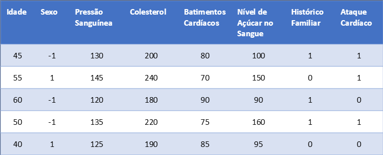
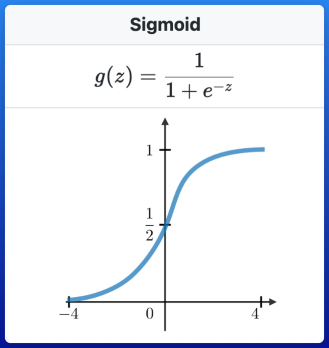
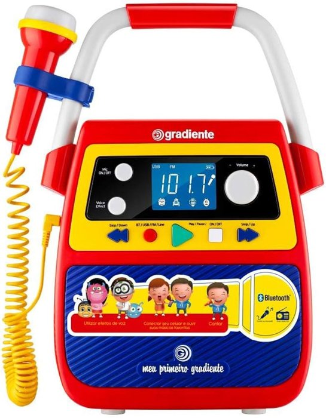
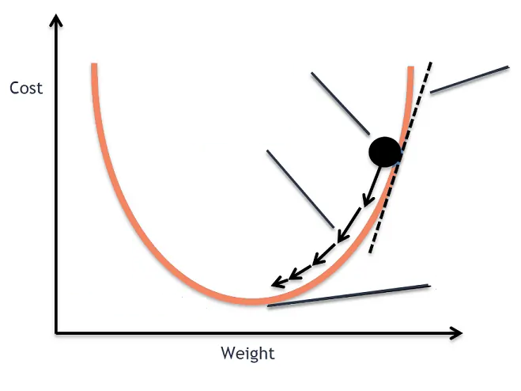

Onde o machine learning se encaixa no histórico da IA e o que ele significa.
A partir dos anos 1990, com o crescimento da internet e do fluxo de dados, cresce o interesse em extrair informação dos dados: surge o Aprendizado de Máquina.

Classificar transações de cartão como legítimas ou suspeitas
Classificar e-mails como spam ou legítimos automaticamente
Existem dois tipos principais:
Prever uma classe.
Ex.: a partir dos dados do paciente, prever o risco de ataque cardíaco (classe: alto ou baixo)
Prever um número.
Ex.: a partir de dados de imóveis, prever o preço de mercado (um número: o preço)
Ao planejar ou delinear um experimento, é preciso amostrar o máximo de condições possíveis:
Um dado só aparece em um dos três — nunca se repete — para garantir que o modelo saiba lidar com amostras nunca vistas antes.
Dependendo do objetivo, selecionamos modelos diferentes:
Treinar é mostrar ao modelo os dados de exemplo. Cada modelo aprende de um jeito, mas todos estão sujeitos a efeitos que atrapalham o resultado:
O teste é o resultado final. A avaliação depende do tipo de predição:
Acurácia geral, kappa, F1-score, sensibilidade/especificidade, acurácia do produtor e do usuário, erros de inclusão e omissão…
Erro médio quadrático (RMSE), erro absoluto médio (MAE), R²
Um modelo estatístico muito usado dentro do aprendizado de máquina para problemas de classificação.
A regressão logística usa a função sigmóide, que "espreme" qualquer número real para o intervalo [0, 1]:

Usamos um algoritmo chamado gradiente descendente (gradient descent).

Imaginamos a perda (loss) — o quão ruim o modelo está — em função do peso. Queremos chegar ao ponto de perda mínima.
Para isso precisamos definir duas coisas:

Exemplo: prever a chance de ataque cardíaco. Primeiro, tratamos os dados (sim → 1, não → 0):
| Idade | Sexo | Pressão | Colest. | Batim. | Açúcar | Hist. Fam. | Ataque |
|---|---|---|---|---|---|---|---|
| 45 | M | 130 | 200 | 80 | 100 | 1 | 1 |
| 55 | F | 145 | 240 | 70 | 150 | 0 | 1 |
| 60 | M | 120 | 180 | 90 | 90 | 1 | 0 |
| 50 | M | 135 | 220 | 75 | 160 | 1 | 1 |
| 40 | F | 125 | 190 | 85 | 95 | 0 | 0 |
Supondo que o modelo tenha previsões $\hat{y}$, podemos medir o acerto por linha:
Podemos escrever as duas regras em uma só fórmula:
A linha de tendência da curva é a derivada — neste caso, da função Loss em relação ao peso.
Se eu descobrir a derivada, sei para que lado preciso ir e o quanto!
Só conseguimos derivar em relação a $z$ e $\hat{y}$ (só elas aparecem na Loss). Usamos a regra da cadeia para chegar até o peso $w_i$:
Cada pedaço tem uma derivada conhecida:
Ao multiplicar as três partes, os termos $\hat{y}(1 - \hat{y})$ se cancelam e sobra algo surpreendentemente simples:
Isso é ótimo, porque já temos tudo: o erro $(\hat{y} - y)$ e as variáveis $x_i$!
| $w_{j_{velho}}$ | peso inicial (aleatório) |
| $\alpha$ | taxa de aprendizado (normalmente < 1) |
| $x_i$ | variável de cada linha |
| $\hat{y}_i - y_i$ | erro (resíduo) |
| $n$ | número de linhas |
Percorrendo o pipeline inteiro para prever o risco de ataque cardíaco:
Vamos baixar o conjunto da internet:
Heart Disease Dataset (Kaggle)
Para a regressão logística, vamos precisar:
Se a categoria tem dois valores (sim/não, M/F), usamos 0 e 1:
| Sexo | Hist. Fam. |
|---|---|
| M | Sim |
| F | Não |
| M | Sim |
| Sexo | Hist. Fam. |
|---|---|
| 0 | 1 |
| 1 | 0 |
| 0 | 1 |
0 representa uma categoria e 1 representa a outra.
Quando há mais de duas categorias, criamos uma coluna para cada uma:
Podemos tirar a primeira coluna: se as outras forem 0, já se sabe que só pode ser ela.
Para a regressão logística, usamos o mínimo e o máximo para levar cada coluna ao intervalo 0–1:
Exemplo (coluna Idade, valores entre 40 e 60):
Adicionamos uma coluna viés preenchida com 1.
Se todas as variáveis tiverem relação inversamente proporcional, o viés permite estabelecer uma linha de base positiva para o modelo ainda dar certo.
| Idade | Sexo | … | Hist. Fam. | Viés |
|---|---|---|---|---|
| 0,25 | 0 | … | 1 | 1 |
| 0,75 | 1 | … | 0 | 1 |
| 0,00 | 1 | … | 1 | 1 |
Começamos escolhendo pesos aleatórios, um para cada coluna (incluindo o viés):
| Idade | Sexo | Pressão | Colest. | Batim. | Açúcar | Hist. Fam. | Viés |
|---|---|---|---|---|---|---|---|
| 0,7 | 0,9 | 0,3 | 0,6 | 0,1 | 1,0 | 0,2 | 0,2 |
| $y$ (Ataque) | Estimado $\hat{y}$ | Erro |
|---|---|---|
| 1 | 0,7480 | -0,2520 |
| 1 | 0,9671 | -0,0329 |
Repetimos isso para todos os pesos, várias vezes, até a Loss parar de melhorar.
Pelos valores dos pesos, sabemos quais colunas têm maior importância:
A Loss caiu de 3,5033 para 1,061! ✅
| Coluna | Peso final |
|---|---|
| Idade | -0,0592 |
| Sexo | -0,5570 |
| Pressão | 0,8152 |
| Colesterol | 1,1103 |
| Batimentos | -1,8044 |
| Açúcar | 1,5133 |
| Hist. Familiar | 0,3505 |
| Viés | 0,2410 |
Próxima aula: Redes Neurais e Aprendizado Profundo